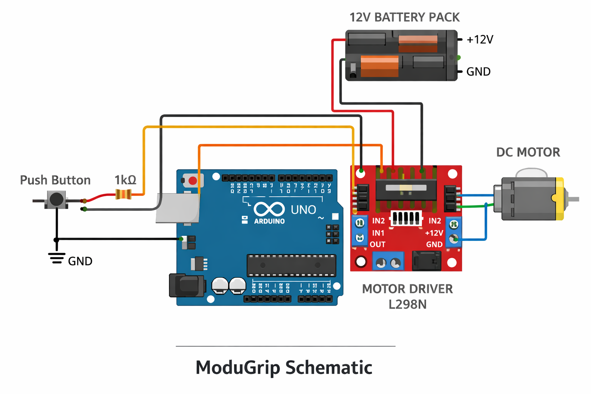

ModuGrip
Embedded mechanical assist system designed to automate drawer opening using motorized actuation, custom 3D-printed hardware, and Arduino-based control.



Project Overview
ModuGrip is a motorized drawer-opening system developed to explore practical embedded automation and assistive mechanical design. The project combines embedded electronics, motor control, and custom 3D-printed hardware into a functional prototype capable of applying pulling force to open a drawer automatically.
The design focused on creating a modular mounting system that could attach to existing furniture without permanent modification. Development centered around force transfer, mounting stability, tension retention, and real-world usability under repeated testing conditions.
Project Specs
This project involved concept development, CAD design, electronics integration, motor control, 3D-printed hardware iteration, physical testing, and prototype failure analysis.
Engineering Challenges
One of the main challenges was converting motor torque into reliable drawer movement without losing tension. Early testing showed that the system could begin opening the drawer, but maintaining consistent pulling force throughout the full motion cycle was more difficult than expected.
Another major challenge was mounting stability. Because ModuGrip was designed to clamp onto an existing counter or drawer setup, the mounting hardware needed to resist vibration, torque, and shifting forces without damaging the surface it attached to.
- Preventing string or cable misalignment during operation
- Designing 3D-printed parts strong enough to resist motor stress
- Balancing compact form factor with structural rigidity
- Improving accessibility without blocking normal drawer use
- Reducing mechanical slip during repeated operation cycles
System Design
ModuGrip uses an Arduino-based embedded control setup paired with a motor driver and DC gear motor to generate controlled pulling force. Custom 3D-printed components were designed to secure the motor assembly, guide force direction, and clamp the system onto a counter surface.
The mechanical design uses a tension-based pulling mechanism that converts rotational motor motion into linear drawer movement. Multiple printed revisions were created to improve motor alignment, clamp strength, and force distribution across the system.
- Arduino microcontroller control
- Motor driver integration
- DC gear motor actuation
- Custom 3D-printed mounting hardware
- Mechanical tension routing system
- Embedded power and control wiring
Testing & Iteration
Real-world testing confirmed that the system could successfully initiate drawer movement, validating the core design concept and actuator approach.
Repeated testing also exposed several mechanical weaknesses that required redesign. The tension system occasionally slipped under load, reducing pulling efficiency and preventing reliable full-range operation. Clamp dimensions also needed adjustment to improve mounting stability across different surfaces.
- Motor support structures needed reinforcement under sustained load
- Force routing placement affected overall usability
- Printed parts experienced stress near mounting points
- Mounting geometry needed refinement for better alignment
- Tension retention became the main focus for future revisions
Results & Findings
ModuGrip successfully demonstrated that a compact embedded-mechanical system could automate the initial opening motion of a standard drawer using low-cost hardware and custom fabrication methods.
The prototype also showed how important mechanical reliability is when designing embedded systems that interact with the physical world. While the system still needs refinement, testing produced valuable engineering findings around mounting stability, force transfer, and tension management.
Future Improvements
The next revision of ModuGrip would focus on improving reliability, reducing mechanical slip, and making the system easier to mount across different drawer and counter setups.
- Redesign the tension system to maintain stronger grip during the full drawer-opening motion
- Reinforce the motor sleeve and mounting bracket to handle load and vibration more effectively
- Improve clamp geometry for more secure attachment to different counter lips
- Route the pulling line away from the center of the drawer to improve usability
- Add limit detection or current sensing to reduce motor strain at end-of-travel
- Refine the enclosure and wiring layout for a cleaner final prototype
Technologies Used
Project Links
GitHub Repository: View Source Code
Demo Video: Watch Prototype Demonstration
The demonstration video shows the prototype applying motor-driven force to initiate drawer movement while also documenting mechanical limitations discovered during testing.
Key Contributions
- Designed the overall embedded-mechanical system architecture
- Developed custom 3D-printed mounting and motor support components
- Integrated embedded motor control hardware and actuator systems
- Performed real-world testing and iterative mechanical redesigns
- Analyzed force transfer behavior and prototype reliability limitations
- Documented engineering findings and future improvement paths